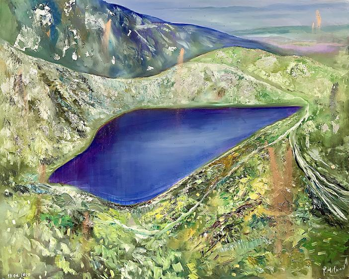

The Tear is the highest of the Seven Rila Lakes (they call it the First or the Upper ). Its altitude is 2535 m, located in a small depression northwest of Damga (Vazov peak). The lake is also the smallest in area and volume of the lakes in the circus, with the smallest catchment area. It is the second shallowest after the Fish Lake . It is fed by two short small streams, which are located on the south and southwest side of the lake. Its outflow flows directly into the fourth lake ( Gemini ).The area of its catchment area is 0.18 km 2 . It is 150 m long and 70 m wide. Its maximum depth is 4.5 m. The water surface area is 0.7 ha. Its water volume is 15,000 m 3 . The lake is considered the beginning of the German River , a tributary of the Struma River . In the past, the lake bore the name Bash puddle.